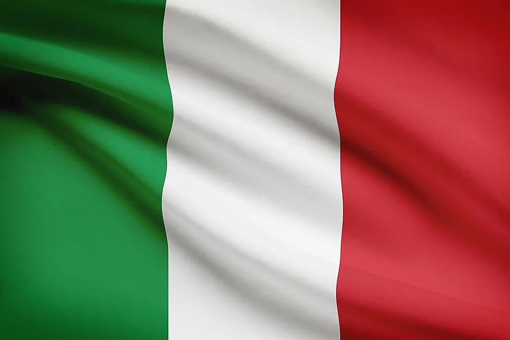
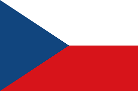

The History
The trophy that we know today is based off of the trophy originally designed by Arthus-Bertrand company in 1960 it was also named after
Henri Delaunay who was former president of the FFF (French Football Federation) and UEFA's first ever general secretary, from the body's founding on 15th June 1954 to 9th November 1955.
The teams who have lifted it
Soviet Union - 1960
In 1960 the first ever euros took place in France and the first team to win the trophy was the Soviet Union./
Spain - 1964
In 1964 the euros took place in Spain and the winner was Spain.
Italy - 1968
In 1968 the euros took place in Italy and the winner was Italy.
Germany - 1972

In 1972 the euros took place in Belgium and the winner was Germany.
Czechoslovakia - 1976
In 1976 the euros took place in Yugoslavia and the winner was Czechoslovakia.
Germany - 1980
In 1980 the euros took place in Italy and the winner was Germany.
France - 1984

In 1984 the euros took place in France and the winner was France.
Netherlands - 1988
In 1988 the euros took place in Germany and the winner was Holland.
Denmark - 1992

In 1992 the euros took place in Sweden and the winner was Denmark.
Germany - 1996
In 1996 the euros took place in England and the winner was Germany.
France - 2000
In 2000 the euros took place in Belgium/Netherlands and the first winner of the new decade was France.
Greece - 2004

In 2004 the euros was held in Portugal and the winner was Greece.
Spain - 2008
In 2008 he euros took place in Austria/Switzerland and the winner was Spain.
Spain - 2012
In 2012 the euros took place in Ukraine/Poland and the winner was Spain.
Portugal - 2016

In 2016 the euros took place in France and the winner was Portugal.
Italy - 2020/2021
In the 2020 euros which was played in 2021, it took place all over europe and the winner was Italy.
The euros is the second biggest international tournament after the world cup but still for some teams
this is the biggest tournament if they cant qualify for the world cup.